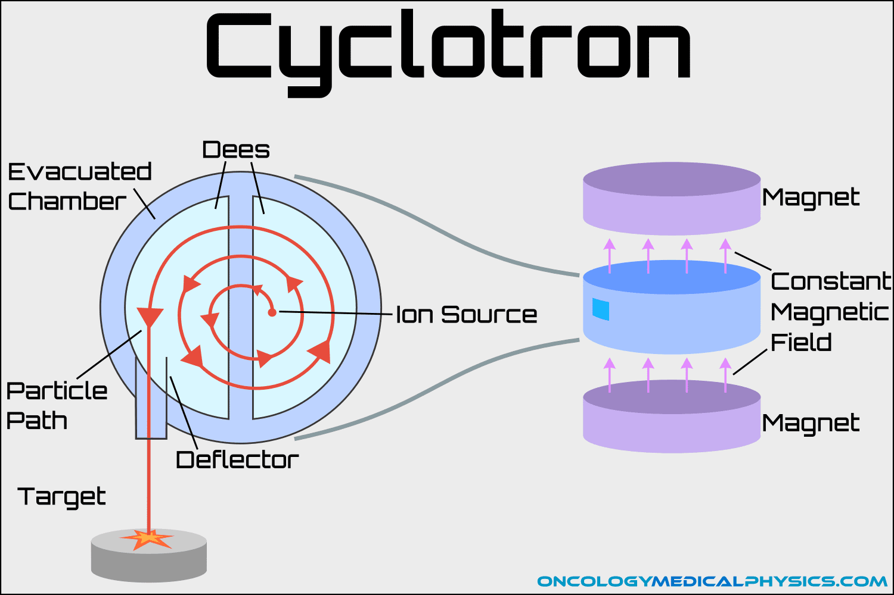
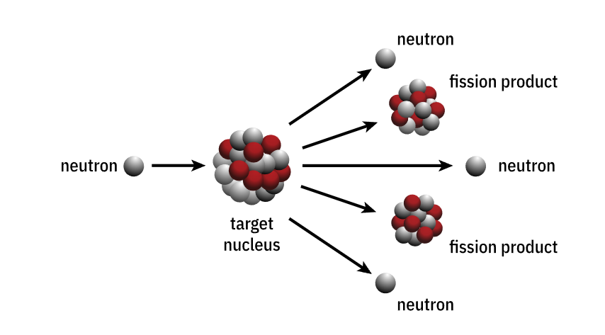

- Nuclear physics is basically the physics of atomic nuclei and how they interact, especially in the generation of nuclear energy. This field really focuses on the characteristics and interactions of atomic nuclei. The discovery of radioactivity in 1896 by Henri Becquerel officially started the history of nuclear physics. As a result of this discovery, new methods of studying the atom were developed, leading to the development of the cyclotron in the 1930s, which was a particle accelerator that accelerated charged particles outwards from the center of a flat cylindrical vacuum chamber along a spiral path.
- It was in December of 1938, over winter break, that scientists Otto Hahn and Lise Meitner discovered nuclear fission, which is the process by which the nucleus of an atom is split into smaller nuclei, thus creating energy. This process releases a huge amount of energy and is the process that allows nuclear weapons and nuclear power to be made. This discovery of fission was a very important breakthrough in the field of nuclear physics and paved the way for the development of the atomic bomb during World War II.
- Nuclear engineering, which is dedicated to the development and design of nuclear power plants and other technologies, was created as a result of the discovery of nuclear fission. The characteristics of the nucleus and its interactions with other particles are still being researched by scientists in the field of nuclear physics today.
- Nuclear fission is the process by which an atom's nucleus divides into two or fewer smaller nuclei, releasing a significant amount of energy in the form of heat and radiation. This nuclear reaction is caused by the nucleus of an atom absorbing a neutron.
- Protons and neutrons, among other subatomic particles, must behave in the atom's nucleus for nuclear fission to take place. The nucleus absorbs a neutron during the fission process, which makes the nucleus unstable and eventually causes it to split into two or more smaller nuclei. In addition to producing additional neutrons that can start additional fission reactions, this process also releases a significant amount of energy in the form of heat and radiation.
- The isotopes of the elements involved in the process are a part of the chemistry of nuclear fission. Uranium-235 and plutonium-239 are the most frequently used isotopes in nuclear fission. These isotopes are more likely to experience fission when struck by a neutron because they have large nuclei with lots of neutrons. These isotopes can be used to make nuclear weapons or generate a major amount of energy through fission, which results in the release of extra neutrons.
- To conclude, a lot of everyday uses for nuclear fission exist, including the creation of nuclear weapons and the production of electricity in nuclear power plants. It could also be dangerous, though, because of the possibility of nuclear accidents and the release of radioactive materials.

